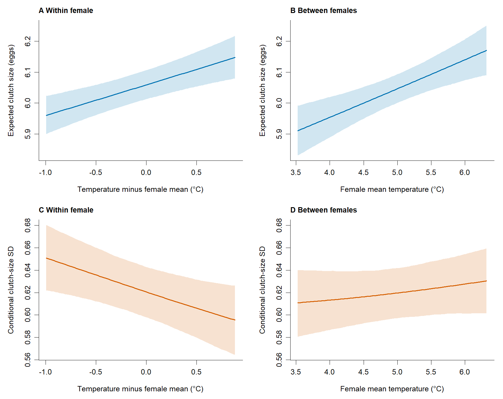
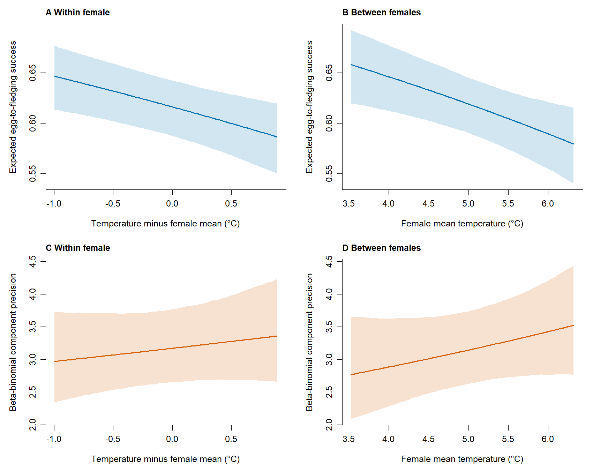

Temperature within and between females
Data preparation
This second temperature formulation is reported in the main paper alongside the single-temperature model. It separates the association of a female’s warmer-than-usual breeding attempts from differences between females with different observed thermal histories. Temperature is split in both location and scale; continuous year, laying date, age and existing random-effect structures are retained.
Show temperature decomposition
# d is the trait-specific analysis dataset; female means use its observed records.
centre <- unique(d$temp_mean - d$temp_mean_c)
d$temp_between <- ave(d$temp_mean, d$female_id, FUN = mean) - centre
d$temp_within <- d$temp_mean_c - d$temp_between
stopifnot(max(abs(d$temp_within + d$temp_between - d$temp_mean_c)) < 1e-8)| trait | records | females | seasons | Females with temperature variation | Their records |
|---|---|---|---|---|---|
| clutch | 12627 | 8894 | 44 | 2547 | 6278 |
| fledging | 9790 | 7132 | 39 | 1908 | 4566 |
Single-record females have zero within deviation. The between predictor describes the seasons in which a female was observed, not a stable thermal preference.
Fit the within–between models
Clutch size uses COM-Poisson; fledging success uses zero-inflated beta-binomial. The extra-zero equation retains an intercept and year random effect, without temperature slopes.
Show fitting script (run locally)
R/90_fit_temperature_within_between.R
# Separate supplementary temperature within/between models, 26 October 2026.
# The original fits/exports are read-only. Private data and fitted objects stay
# under models/ (excluded from the public repository).
# Run from the repository root with two private CSV input paths as arguments.
.libPaths(c(".Rlib", .libPaths()))
Sys.setenv(OMP_NUM_THREADS = 1, OPENBLAS_NUM_THREADS = 1)
suppressPackageStartupMessages(library(glmmTMB))
run_within_between <- function(clutch_csv, reproduction_csv) {
model_dir <- "models/within_between_20261026"
output <- paste0("tables/within_between_20261026", Sys.getenv("WB_OUTPUT_SUFFIX"))
dir.create(model_dir, recursive = TRUE, showWarnings = FALSE)
dir.create(output, recursive = TRUE, showWarnings = FALSE)
put <- function(x, name) write.csv(x, file.path(output, name), row.names = FALSE)
message_now <- function(...) {
cat(format(Sys.time()), ..., "\n"); flush.console()
}
original_hashes <- tools::md5sum(c(
"tables/final_models_20261019/count_coefficients.csv",
"tables/primary_ZIyear_ML_20261021/ZIyear_fixed.csv"))
clutch <- read.csv(clutch_csv, stringsAsFactors = FALSE)
reproductive <- read.csv(reproduction_csv, stringsAsFactors = FALSE)
fledging <- subset(reproductive, year <= 2019 & !is.na(fledged) &
age_class %in% c("YOUNG", "OLD") &
!is.na(female_id) & female_id != "" & !is.na(rel_LD))
fledging$rel_LD <- fledging$laying_date -
ave(fledging$laying_date, fledging$year, FUN = median)
fledging$temp_mean_c <- fledging$temp_mean - mean(fledging$temp_mean)
fledging$year_c <- fledging$year - mean(fledging$year)
clutch$year <- as.integer(as.character(clutch$year_f))
datasets <- list(clutch = clutch, fledging = fledging)
requested <- strsplit(Sys.getenv("WB_TRAITS", "clutch,fledging"), ",", fixed = TRUE)[[1]]
stopifnot(all(requested %in% names(datasets)))
datasets <- datasets[requested]
reference <- read.csv("tables/temporal_models_20261022/observed_annual.csv")
old_clutch <- read.csv("tables/final_models_20261019/count_coefficients.csv")
old_clutch <- subset(old_clutch, model == "COM_Poisson")
old_fledging <- read.csv("tables/primary_ZIyear_ML_20261021/ZIyear_fixed.csv")
diagnostics <- fixed <- contrasts <- comparisons <- metadata <- vifs <- list()
diagrow <- function(m, trait, model, optimizer) {
gradient <- tryCatch(m$sdr$gradient.fixed, error = function(e) NA_real_)
se <- tryCatch(sqrt(diag(m$sdr$cov.fixed)), error = function(e) NA_real_)
data.frame(trait = trait, model = model, optimizer = optimizer,
n = nobs(m), parameters = attr(logLik(m), "df"),
logLik = as.numeric(logLik(m)), AIC = AIC(m),
convergence = m$fit$convergence, pdHess = isTRUE(m$sdr$pdHess),
scaled_gradient = max(abs(gradient * se)))
}
good <- function(m) {
z <- diagrow(m, "", "", "")
isTRUE(z$convergence == 0 && z$pdHess && is.finite(z$logLik) &&
is.finite(z$scaled_gradient) && z$scaled_gradient < .005)
}
start_from <- function(m) {
pl <- m$obj$env$parList(par = m$fit$parfull)
st <- pl[intersect(c("beta", "betazi", "betadisp", "theta", "thetazi",
"thetadisp", "b", "bzi", "bdisp", "psi"), names(pl))]
st[lengths(st) > 0]
}
whitened <- function(par, fn, gr, control = list(), ...) {
if (trait == "clutch") {
inner <- environment(fn)$inner.control
inner$maxit <- 100L; inner$grad.tol <- 1e-7
environment(fn)$inner.control <- inner
}
# Reuse the already computed Hessian inverse at the first optimiser's
# solution for coordinate scaling, rather than computing it twice.
# Optimisation still uses the unbounded, exact marginal likelihood.
V <- a$sdr$cov.fixed
stopifnot(nrow(V) == length(par), all(is.finite(V)))
eig <- eigen((V + t(V)) / 2, symmetric = TRUE)
stopifnot(min(eig$values) > 0)
S <- eig$vectors %*% diag(sqrt(eig$values))
initial <- par
ff <- function(q) fn(drop(initial + S %*% q))
gg <- function(q) drop(crossprod(S, gr(drop(initial + S %*% q))))
if (trait == "clutch" && kind == "within_between") {
fit <- nlminb(rep(0, length(par)), ff, gg,
control = list(iter.max = 1500, eval.max = 3000, rel.tol = 1e-11, trace = 1))
fit$value <- fit$objective
} else fit <- optim(rep(0, length(par)), ff, gg, method = "BFGS",
control = list(maxit = 1500, reltol = 1e-12))
list(par = drop(initial + S %*% fit$par), objective = fit$value,
convergence = fit$convergence, message = fit$message)
}
expanded_bfgs <- function(par, fn, gr, control = list(), ...) {
# Lift baseline covariance to the expanded model and add independent
# numerical scales for the two new contrasts. These are step scales,
# not priors or restrictions on coefficients.
inner <- environment(fn)$inner.control
inner$maxit <- 100L; inner$grad.tol <- 1e-7
environment(fn)$inner.control <- inner
old_names <- rownames(fits$baseline$sdr$cov.fixed)
A <- matrix(0, length(par), length(old_names))
C <- matrix(0, length(par), 2)
for (g in c("beta", "betadisp", "theta")) {
ni <- which(names(par) == g); oi <- which(old_names == g)
if (g == "theta") A[cbind(ni, oi)] <- 1 else {
mapped <- match(sub("temp_(within|between)", "temp_mean_c", active_columns), columns)
A[cbind(ni, oi[mapped])] <- 1
C[ni[active_columns == "temp_within"], if (g == "beta") 1 else 2] <- .5
C[ni[active_columns == "temp_between"], if (g == "beta") 1 else 2] <- -.5
}
}
V <- A %*% fits$baseline$sdr$cov.fixed %*% t(A) +
C %*% diag(c(.01^2, .05^2)) %*% t(C)
e <- eigen((V + t(V))/2, symmetric = TRUE)
stopifnot(min(e$values) > 0)
S <- e$vectors %*% diag(sqrt(e$values))
ff <- function(q) fn(drop(par + S %*% q))
gg <- function(q) drop(crossprod(S, gr(drop(par + S %*% q))))
z <- optim(rep(0, length(par)), ff, gg, method = "BFGS",
control = list(maxit = 1500, reltol = 1e-11, trace = 1, REPORT = 10))
list(par = drop(par + S %*% z$par), objective = z$value,
convergence = z$convergence, message = z$message)
}
for (trait in names(datasets)) {
message_now("START", trait)
d <- datasets[[trait]]
d$female_id <- factor(d$female_id)
d$year_f <- factor(d$year)
d$age_class <- factor(d$age_class, levels = c("YOUNG", "OLD"))
obs <- reference[reference$trait == trait, ]
counts <- table(d$year)
stopifnot(length(counts) == nrow(obs),
all(as.integer(counts[as.character(obs$year)]) == obs$n),
max(abs(tapply(d$rel_LD, d$year, mean)[as.character(obs$year)] -
obs$mean_relative_date)) < 1e-10,
max(abs(tapply(d$age_class == "OLD", d$year, mean)[as.character(obs$year)] -
obs$older_fraction)) < 1e-10)
temperature_center <- unique(round(d$temp_mean - d$temp_mean_c, 10))
stopifnot(length(temperature_center) == 1)
d$temp_between <- ave(d$temp_mean, d$female_id, FUN = mean) - temperature_center
d$temp_within <- d$temp_mean_c - d$temp_between
stopifnot(max(abs(d$temp_within + d$temp_between - d$temp_mean_c)) < 1e-10,
max(abs(tapply(d$temp_within, d$female_id, mean))) < 1e-8)
groups <- split(d$temp_mean, d$female_id)
varied <- vapply(groups, function(x) length(unique(round(x, 10))) > 1, logical(1))
metadata[[trait]] <- data.frame(
trait = trait, records = nrow(d), females = nlevels(d$female_id),
seasons = nlevels(d$year_f), females_repeated = sum(lengths(groups) >= 2),
females_varied_temperature = sum(varied),
records_in_varied_temperature_females = sum(lengths(groups)[varied]),
temperature_center = temperature_center,
year_center = unique(round(d$year - d$year_c, 8)))
saveRDS(d, file.path(model_dir, paste0(trait, "_analysis_data.rds")))
base_form <- if (trait == "clutch")
clutch ~ rel_LD + temp_mean_c + year_c + age_class + (1 | female_id) + (1 | year_f) else
cbind(fledged, clutch - fledged) ~ rel_LD + age_class + temp_mean_c + year_c +
(1 | female_id) + (1 | year_f)
wb_form <- if (trait == "clutch")
clutch ~ rel_LD + temp_within + temp_between + year_c + age_class +
(1 | female_id) + (1 | year_f) else
cbind(fledged, clutch - fledged) ~ rel_LD + age_class + temp_within + temp_between +
year_c + (1 | female_id) + (1 | year_f)
base_disp <- if (trait == "clutch") ~ rel_LD + temp_mean_c + year_c + age_class else
~ rel_LD + age_class + temp_mean_c + year_c + (1 | year_f)
wb_disp <- if (trait == "clutch") ~ rel_LD + temp_within + temp_between + year_c + age_class else
~ rel_LD + age_class + temp_within + temp_between + year_c + (1 | year_f)
base_fixed <- if (trait == "clutch") ~ rel_LD + temp_mean_c + year_c + age_class else
~ rel_LD + age_class + temp_mean_c + year_c
wb_fixed <- if (trait == "clutch") ~ rel_LD + temp_within + temp_between + year_c + age_class else
~ rel_LD + age_class + temp_within + temp_between + year_c
columns <- colnames(model.matrix(base_fixed, d))
old <- if (trait == "clutch") old_clutch else old_fledging
get_cf <- function(component) {
z <- old[old$component == component, ]; setNames(z$estimate, z$term)
}
st <- list(beta = unname(get_cf("cond")[columns]),
betadisp = unname(get_cf("disp")[columns]))
if (trait == "clutch") {
st$theta <- log(c(.06028, .02186))
# Quasi-IRLS is only a starting-mode calculation. The actual likelihood,
# gradients and Hessian are still computed by the exact COM-Poisson model.
nf <- nlevels(d$female_id); ny <- nlevels(d$year_f); n <- nrow(d)
Z <- Matrix::sparseMatrix(i = rep(seq_len(n), 2),
j = c(as.integer(d$female_id), nf + as.integer(d$year_f)), x = 1,
dims = c(n, nf + ny))
Q <- Matrix::Diagonal(x = c(rep(1 / .06028^2, nf), rep(1 / .02186^2, ny)))
eta0 <- drop(model.matrix(base_fixed, d) %*% st$beta)
phi0 <- exp(drop(model.matrix(base_fixed, d) %*% st$betadisp))
modes <- rep(0, nf + ny)
for (initial_iteration in 1:20) {
eta <- eta0 + as.numeric(Z %*% modes); mu <- exp(eta)
variance <- pmax(mu * phi0 + .5 * phi0 * (1 - phi0), .1 * mu * phi0)
weights <- mu^2 / variance
working <- eta - eta0 + (d$clutch - mu) / mu
H <- Matrix::crossprod(Z, Matrix::Diagonal(x = weights) %*% Z) + Q
next_modes <- as.numeric(Matrix::solve(H, Matrix::crossprod(Z, weights * working)))
change <- max(abs(next_modes - modes)); modes <- next_modes
if (change < 1e-8) break
}
st$b <- modes
message_now(trait, "starting modes prepared", initial_iteration, "iterations")
} else {
st$betazi <- unname(get_cf("zi")["(Intercept)"])
st$theta <- log(c(.30025823943742, .309608546517611))
st$thetazi <- log(.526058431521361)
st$thetadisp <- log(.249035787139773)
}
# Scaled numerical bounds stabilise the initial searches. A second,
# unbounded optimiser checks every fit. The expanded clutch model uses
# covariance-scaled BFGS followed by nlminb instead of the bounded search.
active_columns <- columns
bounded <- function(par, fn, gr, control = list(), ...) {
if (trait == "clutch") {
inner <- environment(fn)$inner.control
inner$maxit <- 100L; inner$grad.tol <- 1e-7
environment(fn)$inner.control <- inner
}
lower <- rep(-10, length(par)); upper <- rep(10, length(par))
scale <- rep(1, length(par))
for (component in c("beta", "betadisp")) {
ix <- which(names(par) == component)
stopifnot(length(ix) == length(active_columns))
scale[ix[active_columns == "rel_LD"]] <- .01
scale[ix[active_columns == "year_c"]] <- .005
scale[ix[grepl("^temp_", active_columns)]] <- .1
scale[ix[active_columns == "age_classOLD"]] <- .1
if (trait == "clutch") {
lower[ix] <- if (component == "beta") -.2 else -.5
upper[ix] <- if (component == "beta") .2 else .5
lower[ix[active_columns == "(Intercept)"]] <- if (component == "beta") 1.6 else -5
upper[ix[active_columns == "(Intercept)"]] <- if (component == "beta") 2 else 0
}
}
re <- grepl("^theta", names(par))
lower[re] <- -10; upper[re] <- log(5)
opt <- optim(par, fn, gr, method = "L-BFGS-B", lower = lower, upper = upper,
control = list(maxit = 3000, factr = 1e4, pgtol = 1e-7,
parscale = scale, trace = 1, REPORT = 10))
list(par = opt$par, objective = opt$value, convergence = opt$convergence,
message = opt$message)
}
fits <- list()
for (kind in c("baseline", "within_between")) {
special <- trait == "clutch" && kind == "within_between"
first_label <- if (special) "expanded_BFGS" else "LBFGSB"
second_label <- if (special) "whitened_NLMINB" else "BFGS"
first_file <- file.path(model_dir, paste0(trait, "_", kind, "_", first_label, ".rds"))
message_now(trait, kind, first_label)
if (file.exists(first_file)) a <- readRDS(first_file) else {
if (kind == "baseline") {
a <- glmmTMB(base_form, dispformula = base_disp,
ziformula = if (trait == "clutch") ~ 0 else ~ 1 + (1 | year_f),
family = if (trait == "clutch") compois() else betabinomial(),
data = d, start = st,
control = glmmTMBControl(optimizer = bounded, parallel = 4))
} else {
prior <- fits$baseline; new_start <- start_from(prior)
old_cf <- fixef(prior); wb_columns <- colnames(model.matrix(wb_fixed, d))
duplicate_temperature <- function(v) {
v["temp_within"] <- v["temp_mean_c"]
v["temp_between"] <- v["temp_mean_c"]
unname(v[wb_columns])
}
active_columns <- wb_columns
new_start$beta <- duplicate_temperature(old_cf$cond)
new_start$betadisp <- duplicate_temperature(old_cf$disp)
a <- update(prior, formula = wb_form, dispformula = wb_disp, data = d,
start = new_start,
control = glmmTMBControl(optimizer = if (special) expanded_bfgs else bounded, parallel = 4))
}
saveRDS(a, first_file)
}
print(diagrow(a, trait, kind, first_label))
second_file <- file.path(model_dir, paste0(trait, "_", kind, "_", second_label, ".rds"))
message_now(trait, kind, "independent refinement", second_label)
if (file.exists(second_file)) b <- readRDS(second_file) else {
b <- update(a, data = d, start = start_from(a),
control = glmmTMBControl(optimizer = whitened, parallel = 4))
saveRDS(b, second_file)
}
print(diagrow(b, trait, kind, second_label))
diagnostics[[paste(trait, kind)]] <- rbind(diagrow(a, trait, kind, first_label),
diagrow(b, trait, kind, second_label))
put(do.call(rbind, diagnostics), "optimizer_comparison.csv")
ok <- vapply(list(a, b), good, logical(1))
if (!any(ok)) stop("No admissible model: ", trait, " ", kind)
candidates <- list(a, b)[ok]
selected <- candidates[[which.max(vapply(candidates, function(m) as.numeric(logLik(m)), numeric(1)))]]
fits[[kind]] <- selected
saveRDS(selected, file.path(model_dir, paste0(trait, "_", kind, "_selected.rds")))
if (kind == "baseline") {
expected <- if (trait == "clutch") -13768.5520704332 else -16632.056176958
difference <- as.numeric(logLik(selected)) - expected
message_now(trait, "baseline logLik minus original", difference)
stopifnot(abs(difference) < .001)
}
cf <- summary(selected)$coefficients
fixed[[paste(trait, kind)]] <- do.call(rbind, lapply(names(cf), function(component) {
x <- cf[[component]]
if (is.null(dim(x)) || nrow(x) == 0L) return(NULL)
data.frame(trait = trait, model = kind, component = component, term = rownames(x),
estimate = x[, 1], SE = x[, 2], lower = x[, 1] - qnorm(.975) * x[, 2],
upper = x[, 1] + qnorm(.975) * x[, 2])
}))
put(do.call(rbind, fixed), "fixed_effects.csv")
}
m <- fits$within_between
for (component in c("cond", "disp")) {
cf <- fixef(m)[[component]]; V <- vcov(m)[[component]]
L <- setNames(rep(0, length(cf)), names(cf))
L["temp_within"] <- 1; L["temp_between"] <- -1
estimate <- sum(L * cf); se <- sqrt(drop(t(L) %*% V %*% L))
contrasts[[paste(trait, component)]] <- data.frame(
trait = trait, component = component, contrast = "within_minus_between",
estimate = estimate, SE = se, lower = estimate - qnorm(.975) * se,
upper = estimate + qnorm(.975) * se, p = 2 * pnorm(-abs(estimate / se)))
}
LR <- 2 * (as.numeric(logLik(m)) - as.numeric(logLik(fits$baseline)))
df <- attr(logLik(m), "df") - attr(logLik(fits$baseline), "df")
comparisons[[trait]] <- data.frame(
trait = trait, baseline_AIC = AIC(fits$baseline), within_between_AIC = AIC(m),
delta_AIC = AIC(m) - AIC(fits$baseline), LR = LR, df = df,
p = pchisq(LR, df, lower.tail = FALSE))
X <- model.matrix(wb_fixed, d); Z <- X[, colnames(X) != "(Intercept)"]
stopifnot(qr(X)$rank == ncol(X))
vif <- vapply(seq_len(ncol(Z)), function(j)
1 / (1 - summary(lm(Z[, j] ~ Z[, -j, drop = FALSE]))$r.squared), numeric(1))
vifs[[trait]] <- data.frame(trait = trait, predictor = colnames(Z), VIF = vif)
put(do.call(rbind, metadata), "sample_metadata.csv")
put(do.call(rbind, contrasts), "within_between_contrasts.csv")
put(do.call(rbind, comparisons), "model_comparison.csv")
put(do.call(rbind, vifs), "fixed_design_vif.csv")
capture.output(sessionInfo(), file = file.path(output, "session_info.txt"))
message_now("FINISHED", trait)
}
stopifnot(identical(original_hashes, tools::md5sum(names(original_hashes))))
message_now("COMPLETE: original models and exports unchanged")
}
if (sys.nframe() == 0L) {
args <- commandArgs(trailingOnly = TRUE)
stopifnot(length(args) == 2L)
run_within_between(args[1], args[2])
}The fits use the same private curated records as the single-temperature models and require R with glmmTMB. The public output includes aggregate estimates, not the fitted objects or individual records, so this full refit cannot run in the browser.
Read saved results
The short browser step below reads the public results and recalculates the within-minus-between contrasts and reference-condition summaries.
Recalculate within-between summaries
Uses real aggregate model outputs. A lower clutch SD means greater consistency; a higher fledging component precision means greater consistency.
Show cached-output loading
results <- readRDS("tables/within_between_20261026/aggregate_results.rds")
results$fixed_effects
results$contrasts| trait | component | term | estimate | lower | upper |
|---|---|---|---|---|---|
| clutch | cond | temp_within | 0.016474 | 0.0082647 | 0.024683 |
| clutch | cond | temp_between | 0.01542 | 0.0074873 | 0.023352 |
| clutch | disp | temp_within | -0.10139 | -0.16603 | -0.036745 |
| clutch | disp | temp_between | 0.0093495 | -0.033558 | 0.052257 |
| fledging | cond | temp_within | -0.20563 | -0.33654 | -0.074723 |
| fledging | cond | temp_between | -0.18323 | -0.30417 | -0.062296 |
| fledging | disp | temp_within | 0.065402 | -0.098944 | 0.22975 |
| fledging | disp | temp_between | 0.086186 | -0.051136 | 0.22351 |
Location (cond): log clutch mean or logit beta-binomial mean. Scale (disp): log COM-Poisson inverse shape or log beta-binomial precision. Response-scale consistency curves below account for both clutch components.
Within versus between: direct tests
| trait | component | estimate | lower | upper | p |
|---|---|---|---|---|---|
| clutch | cond | 0.0010541 | -0.0033865 | 0.0054948 | 0.64174 |
| clutch | disp | -0.11074 | -0.18821 | -0.033266 | 0.0050853 |
| fledging | cond | -0.022399 | -0.11145 | 0.066648 | 0.62201 |
| fledging | disp | -0.020784 | -0.18217 | 0.1406 | 0.80072 |
Each contrast is within minus between on its component’s link scale. A significant coefficient alongside a non-significant coefficient is not itself evidence that the effects differ.
Comparison with the single-temperature model
| trait | baseline AIC | within between AIC | delta AIC | LR | df | p |
|---|---|---|---|---|---|---|
| clutch | 27561 | 27557 | -4.3056 | 8.3056 | 2 | 0.015721 |
| fledging | 33294 | 33298 | 3.7549 | 0.24505 | 2 | 0.88468 |
Both members of each comparison were fitted under R 4.6.1 / glmmTMB 1.1.15.2. The baseline likelihoods were checked against the original final fits. Splitting temperature adds two fixed coefficients in total; the nested comparison tests equality of within and between effects in both components.
Year coefficients in the temperature models
These continuous-year terms come from the two models that include temperature. They describe year associations conditional on temperature; the reported temporal trends above come from separate fits with temperature removed from both location and scale.
The exported summary tables and curves below are recalculated from the saved model fits. The export script reads fitted objects under models/, which are not public.
Download year-effect export script
Read year effects from both temperature models
Both models include continuous year and thermal predictors together. These are temperature-adjusted year associations, not year-only trends.
Draw the calendar-year figure
Draws both temperature formulations from saved prediction tables. Modify the code and rerun to change the figure.
Prediction export and checks
Download prediction and diagnostic export · Download figure script
Show prediction export and conditional-simulation code
R/91_export_temperature_within_between.R
# Export within-between model results and prediction intervals from saved fits.
# Fits and individual records remain private; only aggregate outputs are saved.
.libPaths(c(".Rlib", .libPaths()))
suppressPackageStartupMessages({ library(glmmTMB); library(MASS) })
set.seed(20261026)
base <- "models/within_between_20261026"
out <- paste0("tables/within_between_20261026", Sys.getenv("WB_OUTPUT_SUFFIX"))
dir.create(out, recursive = TRUE, showWarnings = FALSE)
put <- function(x, name) write.csv(x, file.path(out, name), row.names = FALSE)
all_curves <- all_effects <- all_checks <- random_sd <- list()
traits <- strsplit(Sys.getenv("WB_TRAITS", "clutch,fledging"), ",", fixed = TRUE)[[1]]
models <- file.path(base, paste0(traits, "_within_between_selected.rds"))
before <- tools::md5sum(models)
cmp_pmf <- function(mu, phi) {
nu <- 1 / phi; k <- 0:max(40, ceiling(max(mu) + 20)); lf <- lgamma(k + 1)
prob <- function(a) {
z <- outer(a, k) - outer(nu, lf)
z <- exp(z - do.call(pmax, as.data.frame(z)))
z / rowSums(z)
}
lo <- nu * log(pmax(mu - 3, .001)) - 20
hi <- nu * log(mu + 3) + 20
for (i in 1:65) {
mid <- (lo + hi) / 2; p <- prob(mid); low <- drop(p %*% k) < mu
lo[low] <- mid[low]; hi[!low] <- mid[!low]
}
p <- prob((lo + hi) / 2)
stopifnot(max(abs(drop(p %*% k) - mu)) < 1e-7,
max(p[, ncol(p)]) < 1e-10,
max(abs(drop(p %*% k^2) - mu^2 - compois()$variance(mu, phi))) < 1e-5)
p
}
for (trait in traits) {
set.seed(20261026 + match(trait, c("clutch", "fledging")))
cat(trait, "prediction export\n"); flush.console()
m <- readRDS(file.path(base, paste0(trait, "_within_between_selected.rds")))
d <- readRDS(file.path(base, paste0(trait, "_analysis_data.rds")))
stopifnot(m$fit$convergence == 0, isTRUE(m$sdr$pdHess), nobs(m) == nrow(d))
b <- fixef(m)
terms <- c(names(b$cond), paste0("disp~", names(b$disp)),
if (length(b$zi)) paste0("zi~", names(b$zi)))
V <- vcov(m, full = TRUE)[terms, terms, drop = FALSE]
point <- c(unname(b$cond), unname(b$disp), unname(b$zi))
stopifnot(min(eigen(V, symmetric = TRUE, only.values = TRUE)$values) > 0)
draws <- MASS::mvrnorm(4000, point, V)
nc <- length(b$cond); nd <- length(b$disp)
design <- if (trait == "clutch")
~ rel_LD + temp_within + temp_between + year_c + age_class else
~ rel_LD + age_class + temp_within + temp_between + year_c
centre <- unique(round(d$temp_mean - d$temp_mean_c, 10))
reference <- function(n) data.frame(
rel_LD = 0, temp_within = rep(0, n), temp_between = 0, year_c = 0,
age_class = factor(rep("YOUNG", n), levels = c("YOUNG", "OLD")))
evaluate <- function(newdata) {
X <- model.matrix(design, newdata)
location <- drop(X %*% b$cond); scale <- drop(X %*% b$disp)
locations <- X %*% t(draws[, seq_len(nc), drop = FALSE])
scales <- X %*% t(draws[, nc + seq_len(nd), drop = FALSE])
phi <- exp(scale); phis <- exp(scales)
if (trait == "clutch") {
mu <- exp(location); mus <- exp(locations)
consistency <- sqrt(compois()$variance(mu, phi))
consistencies <- matrix(sqrt(compois()$variance(as.vector(mus), as.vector(phis))),
nrow(newdata), nrow(draws))
} else {
zero <- plogis(b$zi[1]); zeros <- plogis(draws[, nc + nd + 1])
mu <- (1 - zero) * plogis(location)
mus <- sweep(plogis(locations), 2, 1 - zeros, "*")
consistency <- phi; consistencies <- phis
}
native_data <- newdata; native_data$female_id <- NA; native_data$year_f <- NA
native_mean <- predict(m, newdata = native_data, type = "response", re.form = NA,
allow.new.levels = TRUE)
native_phi <- predict(m, newdata = native_data, type = "disp", re.form = NA,
allow.new.levels = TRUE)
stopifnot(max(abs(native_mean - mu)) < 1e-7,
max(abs(native_phi - phi)) < 1e-7)
list(mean = mu, means = mus, consistency = consistency, consistencies = consistencies)
}
for (predictor in c("temp_within", "temp_between")) {
range <- quantile(d[[predictor]], c(.05, .95))
newdata <- reference(101)
newdata[[predictor]] <- seq(range[1], range[2], length.out = 101)
pred <- evaluate(newdata)
for (component in c("mean", "consistency")) {
values <- pred[[if (component == "mean") "means" else "consistencies"]]
ci <- t(apply(values, 1, quantile, c(.025, .975)))
all_curves[[paste(trait, predictor, component)]] <- data.frame(
trait = trait, predictor = predictor, component = component,
x = newdata[[predictor]] + if (predictor == "temp_between") centre else 0,
estimate = pred[[component]], lower = ci[, 1], upper = ci[, 2])
}
contrast <- reference(2); contrast[[predictor]] <- c(0, 1)
z <- evaluate(contrast)
mean_change <- z$means[2, ] - z$means[1, ]
ratio <- z$consistencies[2, ] / z$consistencies[1, ]
all_effects[[paste(trait, predictor)]] <- data.frame(
trait = trait, predictor = predictor,
mean_change_per_C = z$mean[2] - z$mean[1],
mean_lower = quantile(mean_change, .025), mean_upper = quantile(mean_change, .975),
consistency_measure = if (trait == "clutch") "conditional_SD" else "component_precision",
consistency_ratio_per_C = z$consistency[2] / z$consistency[1],
ratio_lower = quantile(ratio, .025), ratio_upper = quantile(ratio, .975))
}
re <- VarCorr(m)
random_sd[[trait]] <- do.call(rbind, lapply(names(re), function(component)
do.call(rbind, lapply(names(re[[component]]), function(group)
data.frame(trait = trait, component = component, group = group,
SD = unname(attr(re[[component]][[group]], "stddev")))))))
# Conditional plug-in checks at fitted group modes; no parameter uncertainty
# or held-out assessment is implied by these simulation intervals.
mu <- predict(m, type = if (trait == "clutch") "response" else "conditional")
phi <- predict(m, type = "disp")
statistic <- if (trait == "clutch") function(y)
c(mean = mean(y), variance = var(y), fraction_six = mean(y == 6),
outside_2_9 = mean(y < 2 | y > 9)) else function(y)
c(mean_fraction = mean(y / d$clutch), variance_fraction = var(y / d$clutch),
complete_failure = mean(y == 0), complete_success = mean(y == d$clutch))
observed <- statistic(if (trait == "clutch") d$clutch else d$fledged)
if (trait == "clutch") {
pmf <- cmp_pmf(mu, phi)
cdf <- t(apply(pmf, 1, cumsum))
simulation <- replicate(300, statistic(rowSums(cdf < runif(nrow(d)))))
} else {
zero <- predict(m, type = "zprob")
simulation <- replicate(300, {
y <- rbinom(nrow(d), d$clutch, rbeta(nrow(d), mu * phi, (1 - mu) * phi))
y[runif(nrow(d)) < zero] <- 0
statistic(y)
})
}
interval <- t(apply(simulation, 1, quantile, c(.025, .975)))
all_checks[[trait]] <- data.frame(trait = trait, statistic = names(observed),
observed = unname(observed), predicted = rowMeans(simulation),
lower = interval[, 1], upper = interval[, 2], simulations = 300)
put(do.call(rbind, all_curves), "prediction_curves.csv")
put(do.call(rbind, all_effects), "reference_effects_per_degree.csv")
put(do.call(rbind, random_sd), "random_effect_SD.csv")
put(do.call(rbind, all_checks), "conditional_simulation_checks.csv")
cat(trait, "export complete\n"); flush.console()
}
stopifnot(identical(before, tools::md5sum(models)))
capture.output(sessionInfo(), file = file.path(out, "export_session_info.txt"))
saveRDS(list(fixed_effects = read.csv(file.path(out, "fixed_effects.csv")),
contrasts = read.csv(file.path(out, "within_between_contrasts.csv")),
curves = do.call(rbind, all_curves),
reference_effects = do.call(rbind, all_effects)),
file.path(out, "aggregate_results.rds"), version = 3)Numerical convergence and optimiser checks
| trait | model | optimizer | convergence | pdHess | scaled gradient | logLik |
|---|---|---|---|---|---|---|
| clutch | baseline | LBFGSB | 0 | TRUE | 0.00069105 | -13769 |
| clutch | baseline | BFGS | 0 | TRUE | 1.5695e-07 | -13769 |
| clutch | within_between | expanded_BFGS | 0 | TRUE | 1.4237e-06 | -13764 |
| clutch | within_between | whitened_NLMINB | 0 | TRUE | 1.4237e-06 | -13764 |
| fledging | baseline | LBFGSB | 0 | TRUE | 0.00013246 | -16632 |
| fledging | baseline | BFGS | 0 | TRUE | 1.044e-09 | -16632 |
| fledging | within_between | LBFGSB | 0 | TRUE | 0.00022226 | -16632 |
| fledging | within_between | BFGS | 0 | TRUE | 1.9068e-09 | -16632 |
Conditional simulation checks
| trait | statistic | observed | predicted | lower | upper |
|---|---|---|---|---|---|
| clutch | mean | 6.1919 | 6.1961 | 6.1848 | 6.2075 |
| clutch | variance | 0.65595 | 0.56404 | 0.54822 | 0.57893 |
| clutch | fraction_six | 0.51231 | 0.51992 | 0.51009 | 0.52952 |
| clutch | outside_2_9 | 0 | 5.8077e-06 | 0 | 7.9195e-05 |
| fledging | mean_fraction | 0.58607 | 0.58075 | 0.57304 | 0.58827 |
| fledging | variance_fraction | 0.15455 | 0.15193 | 0.14954 | 0.15404 |
| fledging | complete_failure | 0.23647 | 0.23176 | 0.22322 | 0.23995 |
| fledging | complete_success | 0.28856 | 0.28582 | 0.27804 | 0.29377 |
Observed statistics outside the conditional 95% simulation intervals: clutch: variance; fledging: variance_fraction. These discrepancies remain visible in the diagnostics.
Fixed-design VIF
| trait | predictor | VIF |
|---|---|---|
| clutch | rel_LD | 1.0426 |
| clutch | temp_within | 1.0053 |
| clutch | temp_between | 1.3014 |
| clutch | year_c | 1.3121 |
| clutch | age_classOLD | 1.0557 |
| fledging | rel_LD | 1.0455 |
| fledging | age_classOLD | 1.0601 |
| fledging | temp_within | 1.0074 |
| fledging | temp_between | 1.3602 |
| fledging | year_c | 1.3691 |
Simulation intervals use 300 plug-in datasets at fitted parameters and group modes; they are not cross-validation or parameter-uncertainty intervals. Full model and coefficient outputs are retained even when evidence is uncertain.
Figures
Curves hold year and relative laying date at zero, age at yearling and all random effects at zero. Bands are pointwise 95% CIs from 4,000 joint coefficient draws. In the within panels, the female’s mean temperature is held at the sample centre; in between panels, within deviation is zero.


Main results
- Clutch size, location: no clear within/between difference (direct contrast p = 0.642).
- Clutch size, scale: evidence of a within/between difference (direct contrast p = 0.00509).
- Fledging success, location: no clear within/between difference (direct contrast p = 0.622).
- Fledging success, scale: no clear within/between difference (direct contrast p = 0.801).
At the reference conditions above, for a +1°C change: mean differences are in eggs for clutch size and proportions for fledging success. Consistency ratios compare conditional SD or component precision after versus before that change.
| trait | predictor | Mean change (95% CI) | consistency measure | Consistency ratio (95% CI) |
|---|---|---|---|---|
| clutch | temp_within | 0.101 (0.0515, 0.151) | conditional_SD | 0.955 (0.920, 0.989) |
| clutch | temp_between | 0.0941 (0.0468, 0.142) | conditional_SD | 1.013 (0.990, 1.036) |
| fledging | temp_within | -0.0337 (-0.0576, -0.0122) | component_precision | 1.068 (0.911, 1.260) |
| fledging | temp_between | -0.0299 (-0.0503, -0.00989) | component_precision | 1.090 (0.949, 1.254) |
Interpretation
These are adjusted associations from the within–between formulation. Lower clutch SD and higher fledging precision indicate greater consistency; fledging precision is conditional on component mean and clutch size. Between-female temperature differences may reflect sampling years and observation histories, so the decomposition does not establish causation or individual thermal preferences.
Session information · Export session · Reference effects per degree